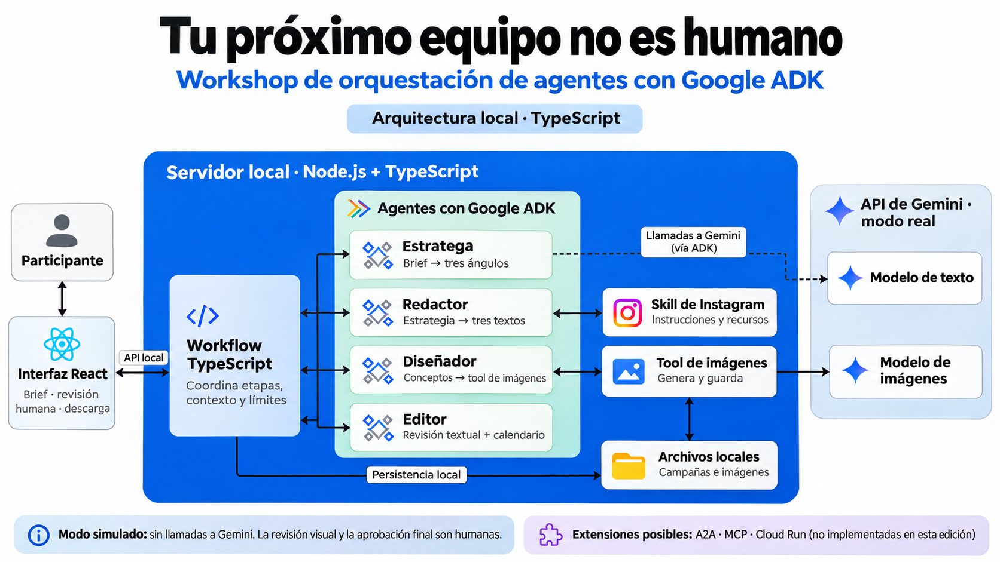

ANTES DE EMPEZAR
Tu próximo equipo no es humano
Workshop de orquestación de agentes con Google ADK
Practica primero con la demo y las comprobaciones offline. Activa Gemini cuando estés listo.
Construye cuatro agentes con Google ADK y conecta sus resultados con una aplicación de contenido. La interfaz, la API, el guardado y los límites están preparados. Trabajarás en archivos pequeños con TODO numerados, comentarios explicativos y bloques para descomentar o pegar.
El caso práctico es Golden Rentals, una marca ficticia de alojamientos. El nombre del taller es Tu próximo equipo no es humano: lo que aprenderás se puede aplicar a otras marcas y equipos de agentes.
Los agentes que construirás
Un agente combina un modelo, instrucciones y herramientas disponibles para una responsabilidad concreta. En el modo real de este proyecto, el backend ejecuta cada agente con ADK y le entrega el contexto que necesita.
| Agente | Rol | Qué recibe | Qué produce |
|---|---|---|---|
| Estratega de marca | Propone una dirección creativa usando los hechos del brief. | Marca, audiencia, objetivo y hechos disponibles. | Una estrategia y tres ángulos de contenido. |
| Redactor creativo | Redacta publicaciones y consulta la skill de Instagram y sus recursos. | Brief, estrategia e instrucciones de la skill. | Tres textos con gancho, cuerpo, CTA, hashtags y referencias a los hechos. |
| Diseñador | Crea conceptos visuales y solicita imágenes fotorrealistas mediante una tool. | Brief, estrategia y textos de cada pieza. | Prompts, texto alternativo e imágenes generadas con Gemini y guardadas localmente. |
| Editor | Revisa coherencia, hechos y textos; propone un calendario. | Brief, estrategia y piezas actuales. | Revisión textual con APPROVED o NEEDS_REVISION, observaciones y tres fechas dentro de siete días. |
El workflow del backend coordina el orden, pasa el contexto y aplica límites. Es código TypeScript; no es un quinto agente. La persona revisa las imágenes y aprueba la campaña. El Editor no inspecciona píxeles y su APPROVED no sustituye esa aprobación humana.
Así se conecta el equipo

Lee el diagrama de izquierda a derecha:
- Participante e interfaz: introduces el brief y después revisas, editas y descargas la campaña.
- Workflow TypeScript: ejecuta estrategia → textos → imágenes → revisión y calendario. También controla el guardado, la cancelación y los límites de ejecución.
- Cuatro agentes ADK: cada uno recibe instrucciones y contexto explícito. El Redactor consulta la skill; el Diseñador solicita la tool de imágenes.
- Modelos y archivos: en modo real, los cuatro agentes llaman a Gemini para texto y la tool llama al modelo de imágenes. Las campañas y las imágenes se guardan en tu computadora. En modo simulado, la demo usa resultados preparados sin contactar a Gemini.
La flecha discontinua hacia el modelo de texto representa al conjunto de los cuatro agentes. El diagrama muestra componentes y conexiones; el orden y las posibles revisiones los decide el workflow.
ADK, tools, skills, MCP y A2A
| Concepto | Para qué sirve | Dónde lo verás |
|---|---|---|
| Google ADK | Framework para definir y ejecutar agentes, gestionar sesiones y conectar sus herramientas. | Construyes un LlmAgent en el paso 2 y lo ejecutas con un Runner. |
| Tool | Función con nombre, descripción y argumentos que el modelo puede solicitar ejecutar. | El Diseñador llama a generate_campaign_image en los pasos 3 y 5. |
| Skill | Instrucciones y recursos reutilizables que se cargan cuando hacen falta. | El Redactor consulta SKILL.md y sus referencias en el paso 4. |
| MCP | Protocolo para conectar aplicaciones de IA con herramientas y datos ofrecidos por servidores externos. | Extensión conceptual: consultar o guardar tareas en Notion mediante un servidor MCP. |
| A2A | Protocolo para que agentes independientes anuncien sus capacidades e intercambien trabajo y resultados. | Extensión conceptual: delegar una tarea en un especialista que corre como servicio separado. |
MCP y A2A son complementarios. Registrar una función local como tool no implica usar MCP; ejecutar varios agentes dentro del mismo proceso no implica usar A2A. Esta edición implementa ADK, tools, skills y orquestación local. Las conexiones A2A, MCP y el despliegue en Cloud Run quedan como posibles ampliaciones.
Consulta las fuentes: ADK, MCP y A2A.
Cómo adaptamos el codelab original
El codelab de referencia presenta un Director Creativo y cinco especialistas distribuidos. Nuestro recorrido adapta esa idea a un proyecto local en TypeScript:
| En el codelab original | En este workshop |
|---|---|
| Estratega con búsqueda web. | Estratega que trabaja con los hechos del brief, sin investigación web. |
| Diseñador con imágenes almacenadas en GCS. | Diseñador con imágenes guardadas localmente. |
| Crítico y Administrador de proyectos separados. | Editor que revisa textos y propone el calendario; la revisión visual es humana. |
| Director Creativo que llama especialistas mediante A2A. | Workflow TypeScript que coordina llamadas locales. |
| Conexión opcional a Notion mediante MCP. | MCP se explica como ampliación; la aplicación todavía no conecta con Notion. |
La guía de Notion es material del taller. Tenerla allí no significa que la aplicación esté integrada con Notion mediante MCP.
Recorrido
- Preparar entorno y valores personales.
- Configurar y probar un agente.
- Registrar y llamar una tool.
- Conectar una skill y sus recursos.
- Generar, extraer y guardar una imagen.
- Revisar y validar una salida estructurada.
- Conectar agentes y pasar contexto.
- Crear la campaña y cerrar el ejercicio.
Los comentarios de cada TODO indican qué hace, qué recibe, qué devuelve y qué debería suceder después. Cada página identifica el archivo, los bloques, la comprobación y un error frecuente. Las explicaciones permanecen en el código después de completar el ejercicio.
Cómo trabajar
Realiza este recorrido en la rama starter. La rama main contiene la solución completa con los comentarios explicativos. En ambas, el proyecto está en la raíz del repositorio.
Abre workshop/exercises/. Descomenta el código del TODO indicado y elimina su llamada pending('ID'), o pega el bloque equivalente de la guía. Conserva las firmas y los imports preparados. Ejecuta la comprobación del módulo antes de avanzar.
pnpm workshop:check 4, por ejemplo, ejecuta tu Redactor con respuestas HTTP locales preparadas. Verás las llamadas a la skill; no se contacta a Gemini. Un TODO sin completar devuelve su ID y no se oculta usando la solución.
workshop/solution/ contiene la referencia comentada. Puedes consultarla para recuperarte de un error. --solution prueba explícitamente esa referencia; no certifica los ejercicios que estás completando. Las pruebas normales usan workshop/exercises/.
Consulta el laboratorio para entender qué demuestra cada modo y cómo ejecutar un agente real de forma explícita. Las pruebas offline funcionan sin credenciales. La duración y dificultad del taller deben ajustarse después de un ensayo con participantes.
Para la organizadora: guía de facilitación.
Objetivo: instalar el starter, ejecutar la interfaz y entender qué configuración pertenece a cada participante. Necesitas familiaridad básica con TypeScript, funciones asíncronas, JSON y una terminal.
Instalar y ejecutar
- Clona la rama
starterpara realizar el taller. Ejecuta desde una terminal:
git clone --branch starter https://github.com/mayrascript/golden-rentals-workshop.git golden-rentals-workshop
cd golden-rentals-workshopEl proyecto está en la raíz de la carpeta clonada. Si descargas un ZIP desde GitHub, selecciona primero la rama starter. Para consultar la solución completa con comentarios, abre la rama main.
- Comprueba
node --version: el proyecto requiere Node.js 24.13 o posterior. La preparación se verificó con 24.22.1 y pnpm 11.25.0. - Si falta pnpm, instálalo con
npm install --global pnpm@11.25.0. - Desde la carpeta que contiene package.json, ejecuta:
pnpm install --frozen-lockfile
pnpm workshop:check setup
pnpm devAbre la dirección que imprima el servidor. La rama starter usa el puerto 4319; main usa 4317. Puedes cambiarlos en .env. Ejecuta una campaña simulada para conocer el resultado que construirás.
Para ejecutar la solución sin modificar tus ejercicios, clónala en una carpeta distinta:
git clone --branch main https://github.com/mayrascript/golden-rentals-workshop.git golden-rentals-solution
cd golden-rentals-solution
pnpm install --frozen-lockfile
pnpm devTODO 1.1 · Crear tu configuración local
Duplica .env.example y nombra la copia .env, si todavía no existe. Si ya tienes uno, conserva sus valores. Los comentarios de la plantilla explican para qué sirve cada campo.
| Valor | Qué significa | Qué debes completar |
|---|---|---|
GENERATION_MODE |
Proveedor usado por la web | Mantén simulated durante la preparación |
GOOGLE_GENAI_API_KEY |
Credencial personal para Gemini | Se completa únicamente al probar el modo real |
TEXT_MODEL |
Modelo de los agentes | La plantilla trae el identificador seleccionado |
IMAGE_MODEL |
Modelo llamado por la tool de imágenes | La plantilla trae el identificador seleccionado |
PORT |
Dirección local del servidor | Cambia el número si el puerto está ocupado |
Esta edición usa Gemini mediante API key y guarda archivos localmente. No solicita nombre de proyecto de Google Cloud, región, bucket ni IDs de Notion. Esos campos corresponderían a módulos de nube o MCP.
TODO 1.2 · Preparar la credencial cuando vayas a probar Gemini
Obtén tu propia clave desde Google AI Studio, en su sección de claves de API, y pégala en GOOGLE_GENAI_API_KEY dentro de .env. Este archivo permanece local y está excluido del ZIP y de Git. No se coloca la clave dentro de un prompt, una skill ni el código del navegador.
Ejecuta pnpm workshop:check setup: mostrará si hay una clave configurada, sin imprimirla. Es una comprobación local, no valida acceso con Google. pnpm gemini:check consulta el acceso a los modelos sin generar contenido.
TODO 1.3 · Elegir el modo de prueba
Los ejercicios empiezan con pnpm workshop:check NUMERO, sin consumo de IA. Mantén GENERATION_MODE=simulated hasta completar los módulos. El laboratorio permite probar un agente real antes de integrar toda la web.
Resultado esperado: la interfaz abre y produce una campaña simulada, y la comprobación setup termina sin mostrar credenciales.
Objetivo: construir un LlmAgent y distinguir definirlo de ejecutarlo. Requisito: completar la preparación.
Antes del código: qué hace Google ADK
Agent Development Kit (ADK) es el framework que usamos para definir y ejecutar los agentes. Gemini es el modelo que genera las respuestas; ADK conecta ese modelo con instrucciones, herramientas, sesiones y el ciclo de ejecución. En este taller usamos su SDK de TypeScript, @google/adk.
| Pieza | Qué significa en este ejercicio |
|---|---|
LlmAgent |
La definición del Estratega: su nombre, modelo, instrucciones y herramientas disponibles. |
name |
Identificador del agente, por ejemplo strategist. |
model |
Modelo configurado en el servidor que atenderá las solicitudes. |
instruction |
Instrucciones de sistema: qué debe hacer y qué límites debe respetar. |
description |
Resumen de su responsabilidad. |
tools |
Herramientas disponibles. El Estratega empieza con una lista vacía. |
Runner y sesión |
Ejecutan al agente con un mensaje y organizan los eventos y el contexto de esa ejecución. |
El recorrido es mensaje → Runner → modelo → respuesta. Cuando hay tools, el modelo puede solicitar una llamada, ADK ejecuta la función y devuelve su resultado al modelo. Una herramienta disponible no se ejecuta automáticamente por estar registrada.
En el paso 7 verás cómo el backend construye el contexto para cada especialista. Las sesiones no hacen que dos agentes compartan automáticamente los resultados del otro.
Comprueba la idea: si creas new LlmAgent(...) sin ejecutarlo, ¿ya consumiste una llamada a Gemini? No: solo has definido el agente. La ejecución ocurre después mediante el Runner.
Documentación: Google ADK.
Construye el Estratega
ADK necesita un modelo, un nombre y unas instrucciones. La descripción resume su responsabilidad. El Runner crea una sesión, envía el brief y recoge la respuesta. Crear el objeto del agente no envía solicitudes al proveedor.
Abre workshop/exercises/02-strategist.ts y lee los comentarios de los TODO 2.1 y 2.2. Completa primero la instrucción y luego el agente. El laboratorio aportará un brief ficticio; el código de la sesión ya está preparado en workshop/lab.ts.
Después de comprobar el bloque base, cambia la instrucción para pedir tres ángulos más distintos. El laboratorio offline verifica la conexión y el contrato con respuestas fijas. Para evaluar el efecto de tu nueva instrucción necesitas una ejecución real.
Error frecuente: confundir description con instruction. La primera describe la responsabilidad del agente; la segunda orienta lo que el modelo debe hacer.
Bloques para completar
Abre workshop/exercises/02-strategist.ts. Para cada TODO, lee los comentarios sobre entradas y salidas. Descomenta el bloque que ya aparece en el archivo y elimina su llamada pending('ID'), o reemplaza el tramo entre @todo:start y @todo:end por el bloque siguiente. Conserva los imports y las firmas.
TODO 2.1
Pega dentro de la función correspondiente:
return `${BASE_INSTRUCTION} Formula una estrategia breve y tres ángulos distintos. No hagas investigación de mercado.`;TODO 2.2
Pega dentro de la función correspondiente:
return new LlmAgent({
...settings,
name: 'strategist',
description: 'Propone tres ángulos a partir de los hechos del brief.',
instruction: strategistInstruction(),
tools: [],
});Comprobar
pnpm typecheck
pnpm workshop:check 2Resultado esperado: Un agente llamado strategist y una estrategia con tres ángulos.
Esta comprobación usa respuestas HTTP locales preparadas, sin clave ni consumo de IA. Ejecuta ADK y las funciones que completaste; no evalúa la calidad de Gemini. Para probar ese agente con el proveedor real, consulta el laboratorio.
Objetivo: exponer una función al modelo y observar el recorrido llamada → ejecución → resultado. Requisito: módulo 2.
Una función TypeScript tiene código ejecutable. Una FunctionTool agrega el nombre, la descripción y el esquema de argumentos que ADK entrega al modelo. Registrarla en tools permite que el agente solicite su ejecución. El modelo propone los argumentos; ADK valida el esquema y ejecuta la función.
Abre workshop/exercises/03-tools.ts. Lee imageParameters: los campos y sus descripciones explican qué debe entregar el modelo. Completa el TODO 3.1 para crear la herramienta y el TODO 3.2 para conectarla al Diseñador.
En este primer ejercicio execute devuelve un resultado técnico fijo. Es deliberado: permite aprender el protocolo antes de generar una imagen. En el módulo 5 se conecta la misma herramienta con Gemini y el almacenamiento.
Observa dos líneas en la terminal: → llamada generate_campaign_image con pieceId, prompt y altText, y ← resultado generate_campaign_image con status: saved. En modo offline la respuesta del modelo que solicita esa tool también está preparada; ADK sí ejecuta tu función.
Error frecuente: crear la herramienta y olvidar incluirla en tools. Otra comprobación rechaza un pieceId inexistente mediante el esquema preparado.
Bloques para completar
Abre workshop/exercises/03-tools.ts. Para cada TODO, lee los comentarios sobre entradas y salidas. Descomenta el bloque que ya aparece en el archivo y elimina su llamada pending('ID'), o reemplaza el tramo entre @todo:start y @todo:end por el bloque siguiente. Conserva los imports y las firmas.
TODO 3.1
Pega dentro de la función correspondiente:
return new FunctionTool({
name: 'generate_campaign_image',
description: 'Genera y guarda una imagen fotorrealista de un alojamiento ficticio para una pieza existente. Una llamada por pieza; no documenta una propiedad real.',
parameters: imageParameters,
execute,
});TODO 3.2
Pega dentro de la función correspondiente:
return new LlmAgent({
...settings,
name: 'designer',
description: 'Diseña escenas fotográficas y solicita su generación mediante una herramienta.',
instruction: `${BASE_INSTRUCTION} Crea escenas fotográficas distintas y coherentes con cada pieza, los hechos y la paleta. ${PHOTO_STYLE} Usa generate_campaign_image una vez por cada pieza que no tenga imagen. Entrega un altText que describa la escena y la identifique como imagen generada por IA de un alojamiento ficticio.`,
tools: [imageTool],
});Comprobar
pnpm typecheck
pnpm workshop:check 3Resultado esperado: Una llamada generate_campaign_image, sus argumentos y el resultado devuelto a ADK.
Esta comprobación usa respuestas HTTP locales preparadas, sin clave ni consumo de IA. Ejecuta ADK y las funciones que completaste; no evalúa la calidad de Gemini. Para probar ese agente con el proveedor real, consulta el laboratorio.
Objetivo: proporcionar conocimiento reutilizable mediante las herramientas de carga de ADK. Requisito: módulo 3.
Abre skills/instagram-copy/SKILL.md y skills/instagram-copy/references/estructuras.md. El primer archivo define la skill y sus instrucciones; el segundo contiene estructuras que el Redactor puede consultar cuando las necesita.
En workshop/exercises/04-skills.ts, completa tres pasos: leer la carpeta con loadSkillFromDir, crear un SkillToolset y registrarlo en tools. Los imports están preparados para que el archivo compile desde el inicio; sus usos aparecen en los bloques comentados.
La comprobación debe mostrar load_skill y luego load_skill_resource, antes de recibir tres textos. Cargar un archivo al arrancar Node y observar que el agente lo consulta son comprobaciones distintas; el laboratorio cubre ambas.
Después, personaliza una regla de tono en SKILL.md y compara resultados en una ejecución real. El modo offline utiliza respuestas fijas y no mide calidad de escritura.
Error frecuente: escribir mal el nombre instagram-copy o la ruta references/estructuras.md. Las skills se incluyen en ambos ZIP; no necesitas el proyecto Python.
Bloques para completar
Abre workshop/exercises/04-skills.ts. Para cada TODO, lee los comentarios sobre entradas y salidas. Descomenta el bloque que ya aparece en el archivo y elimina su llamada pending('ID'), o reemplaza el tramo entre @todo:start y @todo:end por el bloque siguiente. Conserva los imports y las firmas.
TODO 4.1
Pega dentro de la función correspondiente:
return await loadSkillFromDir(directory);TODO 4.2
Pega dentro de la función correspondiente:
return new SkillToolset([skill], { allowInlineScripts: false });TODO 4.3
Pega dentro de la función correspondiente:
return new LlmAgent({
...settings,
name: 'copywriter',
description: 'Redacta tres publicaciones usando la estrategia y la skill de Instagram.',
instruction: `${BASE_INSTRUCTION} Carga la skill instagram-copy y su recurso references/estructuras.md antes de redactar. Produce gancho, cuerpo, CTA, hashtags y referencias a hechos.`,
tools: [skillTools],
beforeToolCallback: ({ tool }) => {
check();
if (!['load_skill', 'load_skill_resource'].includes(tool.name)) throw new Error('Herramienta no disponible en este workshop.');
return undefined;
},
});Comprobar
pnpm typecheck
pnpm workshop:check 4Resultado esperado: Llamadas load_skill y load_skill_resource antes de recibir tres textos.
Esta comprobación usa respuestas HTTP locales preparadas, sin clave ni consumo de IA. Ejecuta ADK y las funciones que completaste; no evalúa la calidad de Gemini. Para probar ese agente con el proveedor real, consulta el laboratorio.
Objetivo: completar la función que conecta el Diseñador con el modelo de imágenes. Requisitos: módulos 2 y 3.
El agente de texto elabora el concepto y llama a generate_campaign_image. La función del servidor construye el prompt fotográfico, solicita la imagen, lee la respuesta y guarda el archivo. La referencia del archivo vuelve a ADK como resultado de la tool.
Abre workshop/exercises/05-images.ts. Completa la llamada al modelo (5.1), la extracción de bytes (5.2) y el guardado (5.3). En esta adaptación se guarda en disco; el codelab original usa Cloud Storage. El cálculo de dimensiones, checksum, historial y límites está preparado en el proveedor de la aplicación.
La respuesta puede incluir texto, partes internas y una imagen final. La prueba incluye una parte interna deliberadamente distinta: extraer la primera imagen sin comprobar thought hará fallar el ejercicio. El PNG offline tiene un solo píxel; comprueba el mecanismo, no el aspecto fotográfico.
En una prueba real se solicita solo una imagen. Se aplica el prompt de packages/providers/image-prompt.ts: luz natural, materiales con textura, proporciones plausibles y aviso de alojamiento ficticio fuera de la imagen.
Error frecuente: devolver un prompt como si fuera la imagen, o no esperar el guardado con await antes de devolver la referencia.
Bloques para completar
Abre workshop/exercises/05-images.ts. Para cada TODO, lee los comentarios sobre entradas y salidas. Descomenta el bloque que ya aparece en el archivo y elimina su llamada pending('ID'), o reemplaza el tramo entre @todo:start y @todo:end por el bloque siguiente. Conserva los imports y las firmas.
TODO 5.1
Pega dentro de la función correspondiente:
return await client.models.generateContent({
model, contents: prompt,
config: {
responseModalities: ['TEXT', 'IMAGE'],
imageConfig: { aspectRatio: '1:1', imageSize: '1K' },
maxOutputTokens: 4096, automaticContinuation: false,
httpOptions: { timeout: 120000, retryOptions: { attempts: 1 } },
},
});TODO 5.2
Pega dentro de la función correspondiente:
const data = response.candidates?.[0]?.content?.parts?.find(part => !part.thought && part.inlineData?.mimeType?.startsWith('image/'))?.inlineData;
if (!data?.data || !data.mimeType || !['image/png', 'image/jpeg'].includes(data.mimeType)) {
throw new AppError('El modelo no entregó una imagen PNG o JPEG.');
}
return { bytes: Buffer.from(data.data, 'base64'), mimeType: data.mimeType };TODO 5.3
Pega dentro de la función correspondiente:
await store.writeAsset(campaignId, relativePath, bytes);Comprobar
pnpm typecheck
pnpm workshop:check 5Resultado esperado: Una imagen final decodificada y guardada; las partes de razonamiento se descartan.
Esta comprobación usa respuestas HTTP locales preparadas, sin clave ni consumo de IA. Ejecuta ADK y las funciones que completaste; no evalúa la calidad de Gemini. Para probar ese agente con el proveedor real, consulta el laboratorio.
Objetivo: convertir la respuesta del Editor en datos que la aplicación pueda usar. Requisito: módulo 2; el laboratorio aporta textos de ejemplo sin ejecutar los módulos anteriores.
Abre packages/contracts/index.ts y localiza editorSchema. Define una revisión y exactamente tres entradas del calendario. TypeScript ayuda al escribir código; Zod valida valores que llegan durante la ejecución.
En workshop/exercises/06-editor.ts, configura el agente (6.1) y completa el parseo y validación (6.2). JSON.parse rechaza JSON mal formado; editorSchema.parse rechaza datos con campos o valores incorrectos. El laboratorio prueba también un JSON sintácticamente válido pero incompleto.
La aplicación actual solicita JSON mediante instrucciones y valida al recibirlo. El codelab original también enseña a enviar un esquema al proveedor: esa restricción durante la generación es una técnica adicional y no equivale a validar con Zod al final. Esta edición mantiene el comportamiento probado del MVP.
El Editor revisa textos y metadatos. HUMAN_REQUIRED deja explícito que la persona revisa los píxeles. APPROVED en la respuesta automática todavía no constituye aprobación humana.
Error frecuente: confiar en que pedir JSON garantiza su estructura o aceptar una revisión con cero fechas.
Bloques para completar
Abre workshop/exercises/06-editor.ts. Para cada TODO, lee los comentarios sobre entradas y salidas. Descomenta el bloque que ya aparece en el archivo y elimina su llamada pending('ID'), o reemplaza el tramo entre @todo:start y @todo:end por el bloque siguiente. Conserva los imports y las firmas.
TODO 6.1
Pega dentro de la función correspondiente:
return new LlmAgent({
...settings,
name: 'editor',
description: 'Revisa hechos y textos y propone un calendario de siete días.',
instruction: `${BASE_INSTRUCTION} Revisa coherencia, hechos y variedad; propone tres fechas dentro de siete días. No inspeccionas píxeles: visualInspection siempre es HUMAN_REQUIRED. APPROVED significa solo revisión automática textual, nunca aprobación humana.`,
});TODO 6.2
Pega dentro de la función correspondiente:
const json = JSON.parse(text.trim().replace(/^```(?:json)?\s*/i, '').replace(/\s*```$/, ''));
return editorSchema.parse(json);Comprobar
pnpm typecheck
pnpm workshop:check 6Resultado esperado: Una revisión y tres fechas válidas; un JSON con forma incorrecta es rechazado.
Esta comprobación usa respuestas HTTP locales preparadas, sin clave ni consumo de IA. Ejecuta ADK y las funciones que completaste; no evalúa la calidad de Gemini. Para probar ese agente con el proveedor real, consulta el laboratorio.
Objetivo: integrar los agentes construidos con el workflow y la interfaz del MVP. Requisitos: módulos 2 a 6.
Abre workshop/exercises/07-workflow.ts. En el TODO 7.1 construyes los cuatro agentes usando las funciones de los módulos anteriores. La función de imágenes viene del proveedor y se registra como herramienta del Diseñador.
En el TODO 7.2 preparas el mensaje de cada etapa. El Redactor recibe la estrategia porque el workflow la incluye explícitamente. El Editor recibe las piezas actuales. El modelo no recibe el historial de versiones ni la aprobación humana.
El orden ya está preparado en apps/server/src/workflow/service.ts: estrategia → textos → imágenes → revisión y calendario. Ese código conserva persistencia, cancelación y límites. Esta edición enseña un workflow local; el director remoto con A2A del codelab pertenece a otra arquitectura.
En ambos paquetes del taller, apps/server/src/agents/team.ts y packages/providers/adk.ts están conectados a estos ejercicios. Los cambios sí llegan al modo real de la web. El modo simulado usa sus propias plantillas y permite recorrer la interfaz antes de terminar los TODO.
Error frecuente: construir todos los agentes pero enviarles únicamente el brief, perdiendo la estrategia y los textos anteriores.
Bloques para completar
Abre workshop/exercises/07-workflow.ts. Para cada TODO, lee los comentarios sobre entradas y salidas. Descomenta el bloque que ya aparece en el archivo y elimina su llamada pending('ID'), o reemplaza el tramo entre @todo:start y @todo:end por el bloque siguiente. Conserva los imports y las firmas.
TODO 7.1
Pega dentro de la función correspondiente:
return {
strategist: createStrategist(settings),
copywriter: await createCopywriter(settings, options.skillRoot ?? resolve('skills/instagram-copy'), () => options.context().check()),
designer: createDesigner(settings, createImageTool(options.generateImage)),
editor: createEditor(settings),
};TODO 7.2
Pega dentro de la función correspondiente:
return JSON.stringify({
task,
data: {
brief: campaign.brief,
strategy: campaign.strategy,
pieces: campaign.pieces.map(({ history: _history, humanApproval: _approval, ...piece }) => piece),
},
});Comprobar
pnpm typecheck
pnpm workshop:check 7Resultado esperado: Cuatro agentes conectados, estrategia y piezas en el mensaje, sin historial ni aprobación humana.
Esta comprobación usa respuestas HTTP locales preparadas, sin clave ni consumo de IA. Ejecuta ADK y las funciones que completaste; no evalúa la calidad de Gemini. Para probar ese agente con el proveedor real, consulta el laboratorio.
Objetivo: comprobar que los bloques construidos trabajan juntos y explicar qué aprendiste.
- Completa los módulos y ejecuta:
pnpm workshop:check all
pnpm typecheck
pnpm test
pnpm buildLa prueba ADK de pnpm test usa el equipo conectado a la web con respuestas locales. Mientras haya TODO pendientes, esa prueba debe fallar. Las comprobaciones por módulo permiten avanzar de forma gradual.
- Ejecuta la web con
pnpm dev. Usa primero el modo simulado para recorrer formulario, revisión y descarga. - Para probar tus agentes reales, configura tu propia clave y presupuesto de cuenta, cambia
GENERATION_MODE=realen.envy reinicia el servidor. La web conserva los límites por campaña; el presupuesto del laboratorio no se aplica a la web. - Crea una campaña ficticia: observa la estrategia, los textos, las imágenes, la revisión y el calendario. Edita una pieza y verifica que su aprobación anterior queda invalidada.
- Revisa el contenido y descarga el borrador o la campaña aprobada. La aprobación humana es tu decisión.
- Detén el servidor. Las campañas de la web permanecen en
.data/; los ejercicios y tu configuración personal permanecen en tu carpeta.
Explicar lo construido
- ¿Qué cambia entre definir un agente y ejecutarlo con un Runner?
- ¿Qué datos describe el esquema de una FunctionTool y qué ejecuta ADK?
- ¿Cómo comprobaste que el Redactor consultó la skill y un recurso?
- ¿Qué devuelve la herramienta de imágenes al agente?
- ¿Qué comprueba Zod que JSON.parse no comprueba?
- ¿Cómo recibe el Redactor la estrategia? ¿Quién decide el orden?
- ¿Qué demuestra la prueba offline y qué requiere una prueba real?
La solución local conserva cuatro agentes, workflow explícito y revisión humana. MCP, A2A, revisión automática de píxeles y despliegue son extensiones pedagógicas que requieren sus propios ejercicios y validaciones.
El laboratorio crea una campaña ficticia temporal. Aporta estrategia y textos de ejemplo para que puedas probar un agente por separado. No lee tus campañas personales.
Comprobaciones sin red
pnpm workshop:check setup
pnpm workshop:check 2
pnpm workshop:check 3
pnpm workshop:check 4
pnpm workshop:check 5
pnpm workshop:check 6
pnpm workshop:check 7
pnpm workshop:check allLos módulos 2 a 6 ejecutan agentes ADK con respuestas HTTP preparadas. Las tools y la lectura de archivos sí se ejecutan. La salida del modelo es una fixture: cambiar el prompt no modifica ese texto fijo. La comprobación de imágenes usa un PNG de 1 píxel y elimina sus archivos temporales al terminar. El módulo 7 verifica la conexión del equipo y el mensaje de contexto.
Las líneas → llamada muestran nombre y argumentos; ← resultado muestra un extracto del resultado. Las partes internas de razonamiento no se imprimen. El módulo 4 exige observar tanto load_skill como load_skill_resource; crear el toolset por sí solo no basta.
Ejecutar un agente con Gemini
Completa los TODO necesarios y configura tu .env. Elige un presupuesto máximo para las pruebas de este laboratorio. Después sustituye IMPORTE en este comando por ese número:
pnpm workshop:run 2 --real --allow-paid-generation --budget-usd=IMPORTEPuedes usar 2 (Estratega), 4 (Redactor), 5 (Diseñador, una imagen) o 6 (Editor). Cada ejecución tiene un máximo de seis llamadas contando la imagen. El Diseñador requiere los módulos 3 y 5. La salida real varía; aquí sí puedes comparar el efecto de tus instrucciones.
El laboratorio reserva una estimación conservadora antes de cada llamada y conserva el acumulado en .workshop-data/lab-budget.json. El presupuesto indicado es un tope acumulado para ese laboratorio, no un monto adicional por ejecución. El registro usa las tarifas documentadas al preparar el piloto y debe revisarse antes de impartir el workshop; no es una factura de Google. La interfaz web y el script real:validate tienen controles separados. --solution selecciona expresamente la solución, nunca se usa como recuperación automática de un TODO pendiente.
Una ejecución real conserva sus archivos en la carpeta temporal indicada en la salida; el Diseñador muestra la ruta de la imagen. Los módulos 3 y 7 se comprueban offline. La campaña completa se prueba después desde la web.
Si se cerró a la fuerza un laboratorio real, puede quedar .workshop-data/lab.lock. Comprueba que no haya otra ejecución activa antes de eliminar ese archivo. El registro de reservas debe conservarse.
Preparar la sesión
Comparte la rama starter con el grupo. Conserva una copia de main, la solución completa con comentarios, para demostrar el objetivo y ayudar en un bloqueo. Recorre primero la interfaz y luego abre el TODO 2.1. Los archivos incluyen las explicaciones que se deben leer junto al código.
El grupo debe tener bases de TypeScript, funciones asíncronas y JSON. Comprueba Node y pnpm antes del día del taller. El modo offline evita que una credencial o una cuota bloquee el aprendizaje de tools y skills.
Facilitar cada módulo
- Explica el concepto con el caso de Golden Rentals.
- Identifica el archivo y el TODO exacto.
- Pide leer entradas y salidas antes de descomentar.
- Ejecuta la comprobación y observa el resultado con el grupo.
- Haz la pregunta de comprensión y registra dónde necesitaron ayuda.
| Módulo | Pregunta de comprensión | Señal para avanzar |
|---|---|---|
| 2 | ¿Se llamó a Gemini al crear el objeto? | Identifica definición, sesión y ejecución |
| 3 | ¿Quién propone argumentos y quién ejecuta la función? | Observa llamada y resultado de la tool |
| 4 | ¿Leer SKILL.md desde Node demuestra que el modelo lo consultó? | Observa las dos herramientas de carga |
| 5 | ¿Un prompt o texto en la respuesta equivale a una imagen? | Extrae y guarda los bytes finales |
| 6 | ¿JSON válido significa datos válidos para la aplicación? | Rechaza la respuesta incompleta |
| 7 | ¿Cómo llega la estrategia al Redactor? | Identifica el contexto explícito del workflow |
Recuperación
Un error Completa el TODO X indica qué bloque falta. Si hay un error de TypeScript, comprueba que se eliminó la llamada pending y se descomentó el bloque entero conservando sus llaves. La guía contiene el código para pegar y workshop/solution/ la referencia completa.
En una prueba offline, un resultado de texto fijo es esperado. En una prueba real, confirma que la persona eligió un presupuesto y que conoce la separación entre laboratorio y web. No distribuyas tu .env ni las campañas personales.
Ensayo pendiente
Esta edición se valida con pruebas técnicas y recorrido de instalación. Mide por separado el tiempo de instalación, cada módulo y la campaña final con participantes del público objetivo antes de anunciar una duración. Registra también errores frecuentes y gasto observado. No atribuyas los tiempos del codelab Python a esta adaptación.
Mantener el material
Main es la referencia completa y starter nace de main con los 14 bloques desactivados. Mantén alineados los comentarios, los bloques de la guía y los contratos al actualizar los ejercicios. El archivo workshop/source-generator.ts contiene la transformación de solución a código comentado. Comprueba main con los seis módulos y las pruebas de producto; comprueba starter también como proyecto incompleto antes de distribuirlo.
Para distribuir un ZIP de una rama, ejecuta pnpm package desde esa copia. El paquete excluye las credenciales, las campañas guardadas y las dependencias instaladas.